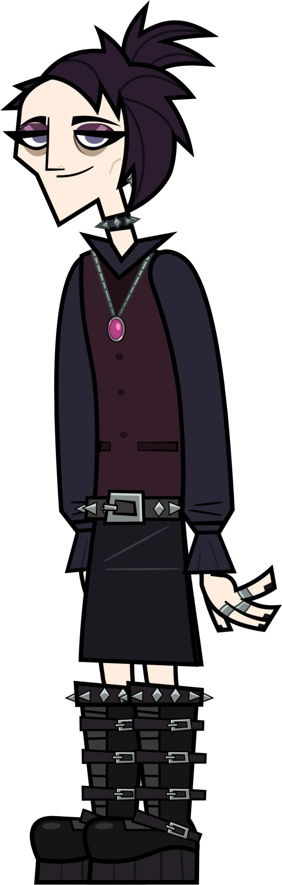
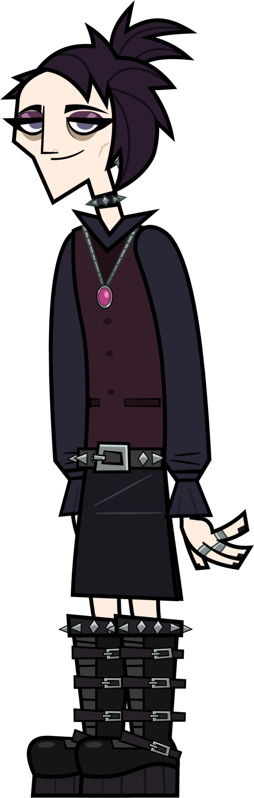

bienvenidos ami sitio web sobre tristan vik :3
este sitio fue creado como parte del rabajo practivo n°2 del laboratiorio de proramacion.
sobre este sitio
explora la historia,curiosidades e imagenes sobre tristan vik
Apariencia
Tristán se presenta como un gótico común y corriente. Su apariencia consiste en cabello negro y puntiagudo, rapado a un lado, ojos azules con ojeras, piercings, una gargantilla, una sudadera con capucha roja y negra, un cinturón negro con tachuelas, un collar rosa con colgante, una falda negra y unas botas de plataforma con tacos.

Personalidad
Tristán es una persona amigable, comprensiva y pacífica. Debido a esta naturaleza pacífica, Tristán desea mantenerse alejado de los conflictos cuando surgen, como en "Down and Dirty", cuando se ponen muy ansiosos por batirse en duelo con Richard. Tristán también prefiere ser optimista y mantener la sonrisa, incluso ante las situaciones difíciles. A menudo antepone las necesidades de sus amigos a las suyas, como cuando ayudó a Ivy y Zaid a acercarse tras descubrir la química romántica entre ellos. Tristán también es un compañero de equipo comprensivo, e incluso se refirió a su equipo como una "familia" en un momento dado.
Historia
Entrevista de audición TristanAudition Tristán en su audición Para competir en Disventure Camp 4: Carnival of Chaos , Tristan tuvo que realizar una entrevista de audición de un minuto, explicando sus antecedentes, por qué quería competir en Disventure Camp y cómo jugaría si lograba entrar en el programa. Su audición tiene un inicio dramático y melancólico, en el que comentan con tristeza que preferirían que el clima fuera oscuro como su alma. Luego estallan en carcajadas y admiten que bromeaban sobre su personalidad temperamental. Tristan señala con entusiasmo varios equipos de producción, como la cámara, el brazo y la mesa de servicio. Al ver esto último, pide con sarcasmo un macchiato de caramelo con espuma extra. Se presentan como personas no binarias. Cuando se les pregunta sobre estrategia, Tristan dice que prefieren hacer amigos y fundirse con la naturaleza que conspirar y crear estrategias. Tristan les asegura que están decididos a ganar siendo amigables, asumiendo que nadie los votaría si les caen bien

↑--------"tristan en la audicion"-------------↑
menu de navegacion
imagen cuerpo completo

imagen del traje musical

gracias por visitar :3
menu de navegacion
imagen cuerpo completo
imagen del traje musical
gracias por visitar :3